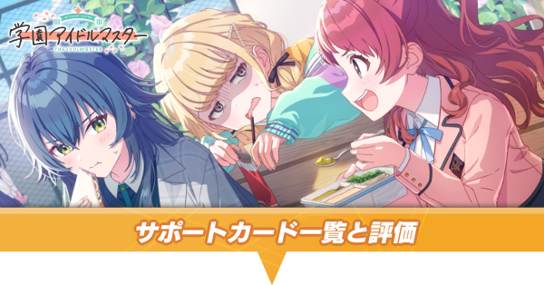
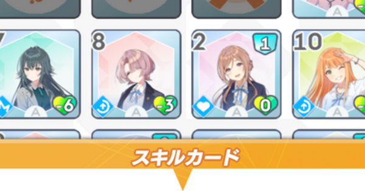
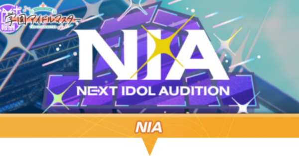

Semi Blue
กลับมาแล้ว
ตู้รีรัน セミブルー และ STEP UP ร่วมกับ 冠菊
คู่มือ 学園アイドルマスター ฉบับภาษาไทย — อ่านระบบที่ซับซ้อนให้เข้าใจง่าย พร้อมชื่อญี่ปุ่นสำหรับค้นหาในเกม
ตารางสั้น ๆ สำหรับเช็กก่อนเข้าเกม
เวลาไทยช้ากว่าเวลาญี่ปุ่น 2 ชั่วโมง
ตู้รีรัน セミブルー และ STEP UP ร่วมกับ 冠菊
เคลียร์ภารกิจบนแผง รับตั๋วการันตี SSR P Idol
ปั้นไอดอลเป้าหมายและทำเงื่อนไขเพื่อรับค่าความสนิทเพิ่ม
เส้นทางสำหรับโปรดิวเซอร์มือใหม่
ทำตามลำดับนี้ได้เลย
เลือกตามสิ่งที่คุณกำลังติด
สรุปใหม่เป็นภาษาไทย
โบนัส, P Item, Memory และแนวทางทำแรงก์ S4+
อ่านคู่มือ →ลำดับปลดล็อก การใช้ทรัพยากร และสิ่งที่ไม่ควรพลาด
อ่านคู่มือ →Sense, Logic และ Anomaly แบบเข้าใจใน 5 นาที
อ่านคู่มือ →ค้นหาศัพท์จากภาษาญี่ปุ่น ภาษาไทย หรือคำอ่านอังกฤษ
เปิดพจนานุกรม →เป้าหมาย เวลาที่ใช้ และขั้นตอนเริ่มบัญชีใหม่แบบย่อ
อ่านคู่มือ →อ่านอันดับให้ถูกโหมด พร้อมเกณฑ์ประเมินและตัวเด่นล่าสุด
อ่านคู่มือ →ความสำคัญของ SP Lesson, โบนัสค่าสถานะ และความเข้ากับ H.I.F
อ่านคู่มือ →สะสม 集中 และ 好調 ก่อนปิดเกมด้วยคอมโบทำคะแนน
อ่านคู่มือ →เลือกระหว่างแกน 好印象 หรือ やる気 + 元気
อ่านคู่มือ →สลับ 温存 กับ 強気 และเลือกจังหวะ 全力
อ่านคู่มือ →วิธีอ่าน Skill Card, P Item และ P Drink โดยไม่เลือกผิดสาย
อ่านคู่มือ →ตั้งเป้าค่าสถานะ วางเด็ค และบริหารพลังงานตั้งแต่ต้นรอบ
อ่านคู่มือ →จัดลำดับ Lesson, 授業, 相談 และรักษาพลังงานให้พอ
อ่านคู่มือ →เลือกคีย์สกิล โบนัสค่าสถานะ และวิธีลดตัวเลือกสุ่ม
อ่านคู่มือ →ช่วงที่ใช้เงื่อนไข ช่วงที่ใช้แต้ม และรางวัลสำคัญ
อ่านคู่มือ →เป้าค่าสถานะประมาณ 3,000 และคะแนนสอบปลายภาค
อ่านคู่มือ →การสอบ 3 รอบ, SP Lesson, 営業 และ 特別指導
อ่านคู่มือ →จัดทีมจาก Memory อ่าน Stage Effect และวางแผนตามฤดูกาล
อ่านคู่มือ →เช็ก Limited, ระยะเวลา, P Idol/Support และงบก่อนกด
อ่านคู่มือ →ชื่อญี่ปุ่นและแนวทางเลือก P Idol แต่ละเวอร์ชัน
เปิดสารบัญ →วิธีกรองตามระดับ ค่าสถานะ Plan และแหล่งที่มา
เปิดสารบัญ →โปรไฟล์ภาษาไทย 13 คน
อัปเดตจาก Game8 · 14.08.2026
ไม่พบไอดอลที่ค้นหา
Cycle 3B · รายการ SSR ฉบับเต็ม
Tier อ้างอิง 14.08.2026
| P Idol | Tier | Plan / กลไก | ระดับ | วิธีได้รับ |
|---|
ไม่พบ P Idol ตามเงื่อนไขนี้
Cycle 4 · รายการครบทุกระดับ
อ้างอิง 14.08.2026

| Support Card | Tier | ประเภท | Plan | วิธีได้รับ |
|---|
ไม่พบ Support Card ตามเงื่อนไขนี้
Cycle 5 · การ์ดสกิลทุก Plan
อ้างอิง 21.07.2026

ไม่พบ Skill Card ตามเงื่อนไขนี้
Cycle 6 · ฐานข้อมูลอุปกรณ์ครบชุด
อ้างอิง 21.07.2026
ไม่พบข้อมูลตามเงื่อนไขนี้
Cycle 7 · เส้นทาง Produce
ตั้งแต่ 初 ถึง H.I.F S4+

คำแปลและการเรียบเรียงภาษาไทยจากคู่มือ Game8 · แต่ละรายการมีลิงก์ไปยังบทความต้นฉบับโดยตรง
หัวใจของการเลือกการ์ด
และการวางแผนทำคะแนน
บริหาร 集中 (สมาธิ) และ 好調 (ฟอร์มดี) ก่อนใช้การ์ดทำคะแนนแรงในจังหวะสำคัญ เหมาะกับคนที่ชอบวางคอมโบชัดเจน
ค้นได้ทั้งญี่ปุ่น ไทย และอังกฤษ
ไม่พบคำนี้ — ลองค้นด้วยคำที่สั้นลง